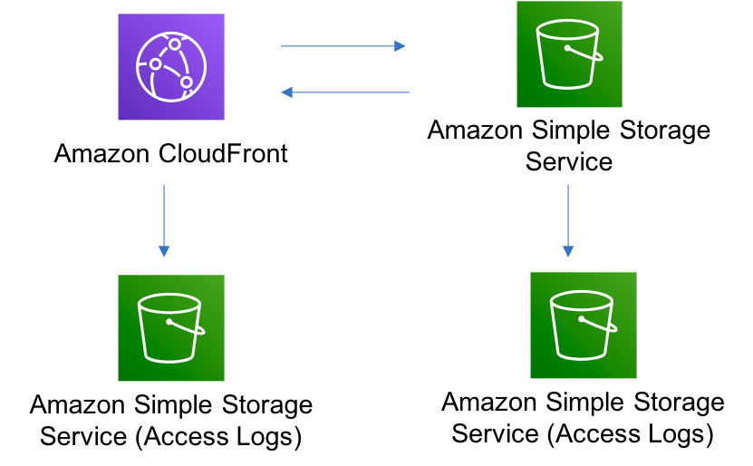

Level 1 construct
// Create S3 bucket
const bucket = new CfnBucket(this, 'MyBucket', {
bucketName: 'my-bucket',
accessControl: 'Private'
});
// define distribution
// Grant CloudFront access to the S3 bucket
const bucketPolicy = new CfnResource(this, 'BucketPolicy', {
type: 'AWS::S3::BucketPolicy',
properties: {
bucket: bucket.ref,
policyDocument: {
Version: '2012-10-17',
Statement: [
{
Sid: 'AllowCloudFrontAccess',
Effect: 'Allow',
Principal: '*',
Action: 's3:GetObject',
Resource: `arn:${this.partition}:s3:::${bucket.ref}/*`,
Condition: {
StringLike: {
'aws:Referer': `https://${distribution.attrDomainName}`
}
}
}
]
}
}
});
Level 2 construct
const bucket = new Bucket(this, 'MyBucket', {
bucketName: 'my-bucket'
});
// define distribution ...
bucket.grantRead(distribution);
Level 3 construct
new CloudFrontToS3(this, 'cloudfront-s3', {});

Example
export class BucketStack extends Stack {
constructor(scope: Construct, id: string, props?: StackProps) {
super(scope, id, props);
new CloudFrontToS3(this, 'cloudfront-s3', {});
new cognito.UserPool(this, 'Pool');
}
}
CI/CD
export class MyPipelineStack extends cdk.Stack {
constructor(scope: Construct, id: string, props?: cdk.StackProps) {
super(scope, id, props);
const pipeline = new CodePipeline(this, 'Pipeline', {
pipelineName: 'MyPipeline',
synth: new ShellStep('Synth', {
input: CodePipelineSource.gitHub('OWNER/REPO', 'main'),
commands: ['npm ci', 'npm run build', 'npx cdk synth']
})
});
pipeline.addStage(new MyDeployableStack(this, "id", {
env: { region: 'eu-west-1', account: '********' },
}));
}
}